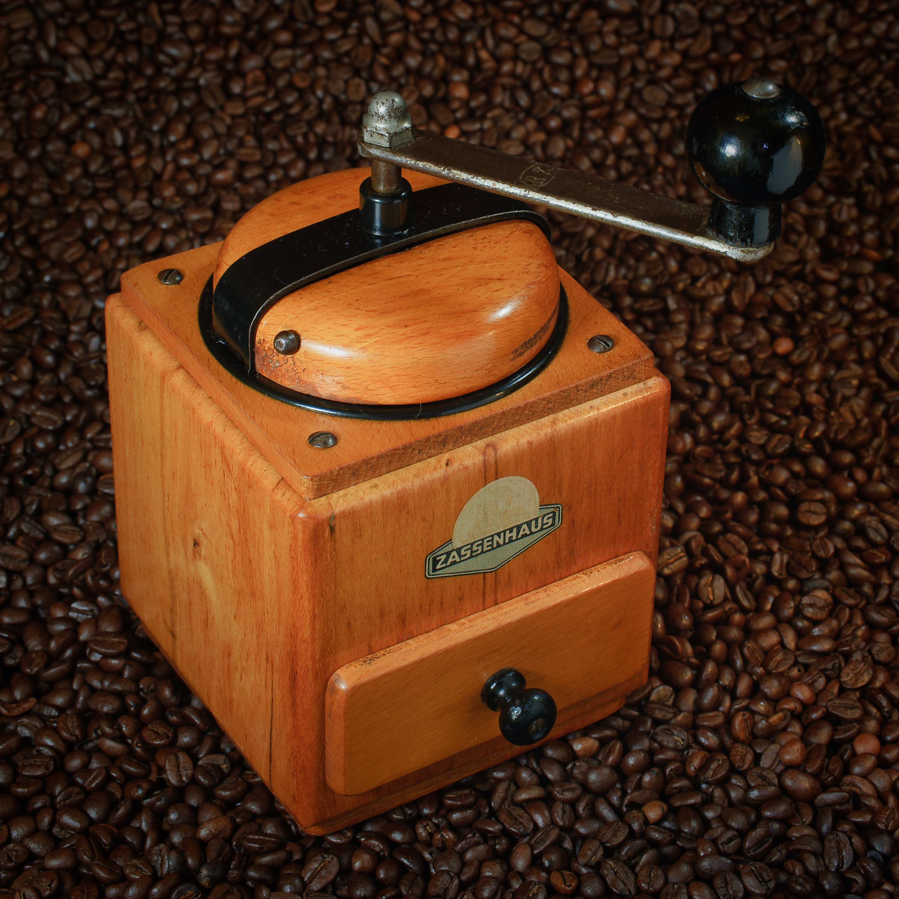

Хит продаж
Кофемолка ручная «Жезл»
Керамические жернова и 15 степеней помола. Подходит для эспрессо и турки.
24 990 ₸ 29 990 ₸

Хит продаж
Керамические жернова и 15 степеней помола. Подходит для эспрессо и турки.
24 990 ₸ 29 990 ₸